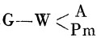

著作书信补遗。1840—1895
恩格斯致加布里埃尔·杰维尔
[18]88年4月27日于伦敦
西北区瑞琴特公园路122号
第一次发表于马·唐蒙日《马克思主义传入法国的经过》1969年洛桑版
原文是法文
巴黎
亲爱的杰维尔公民：
谢谢您寄来的关于巴尔札克的小书FN1，我将欣然拜读。在我看来，巴尔扎克是塞万提斯之后的一切时代的最伟大的小说家，同时也是从1815年到1848年的法国社会的最直言不讳的史料研究家。我喜欢巴尔札克的一切作品。
您对马克思的公式解释得完全正确。手稿上这个公式明明写的是：

，只是由于印刷工人自作聪明和任意处理印成＜，才产生了各种误解。18页上有完整的公式FN2
…Ｐ…Ｗ′…Ｇ′或…Ｐ…（Ｗ＋ｗ）——（Ｇ＋ｇ）也就是表示：
变成Ｗ（商品）的Ｇ（货币），这样的商品由Ａ（劳动力）和Ｐｍ（生产资料）所构成；这种商品Ｗ经过生产过程Ｐ变成新的价值大于Ｗ的商品Ｗ′（具有新的质，但是这一点在这里与我们不相干，因为这里说的只是价值），因此它等于Ｗ加上某种增长额ｗ（Ｗ＋ｗ）；这种Ｗ′又换成货币，即大于Ｇ的Ｇ′或等于Ｇ加上增长额ｇ（Ｇ＋ｇ）。
符号——表示交换的过程；符号……表示，某种价值经历一种不是交换的形式变化，在这个地方是生产过程。
如果您需要别的解释，我随时听候您的吩咐。我担心，这第2卷会给您添不少麻烦，但不能用新的惊人的解答来酬劳您。问题在于资产阶级内部发生的事情；结论在理论上是高超的，但没有直接应用。这就是我特别焦急地等待出版它的法文译本和英文译本的原因；作为它的必要补充要有第3卷。FN3
请接受我的衷心的问候
弗·恩格斯
脚 注
FN1 加·维杰尔《妇女和爱情》。——编者注
FN2 《资本论》第2卷（见《马克思恩格斯全集》中文版第24卷第49页）。——编者注
FN3 《资本论》。——编者注